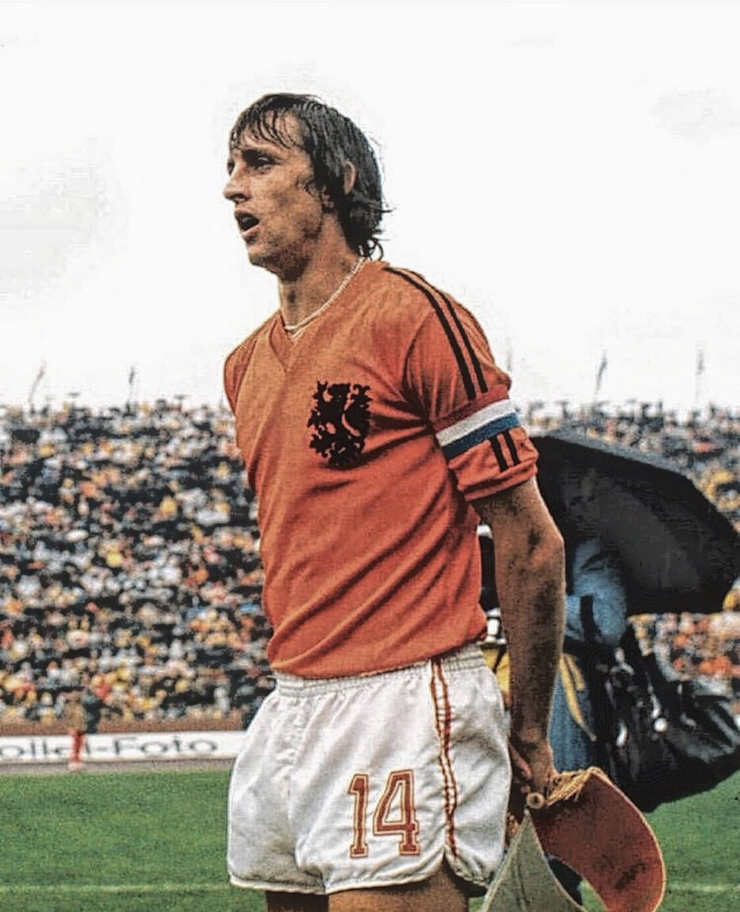

Hendrik Johannes Cruijff 25 April 1947
24 Maret 2016 adalah mantan pelatih dan pemain sepak bola Belanda.
Dianggap sebagai salah satu pemain terhebat dalam sejarah dan sebagai
pesepakbola Belanda terhebat yang pernah ada, ia memenangkan Ballon d'Or
tiga kali, pada tahun 1971, 1973, dan 1974.[4] Cruyff adalah pendukung
filosofi sepak bola yang dikenal sebagai Total Football yang
dikembangkan oleh Rinus Michels, yang juga dipekerjakan oleh Cruyff
sebagai manajer. Karena pengaruh gaya bermain dan ide kepelatihannya
yang luas, ia secara luas dianggap sebagai salah satu tokoh paling
berpengaruh dalam sepak bola modern, dan ia juga dianggap sebagai salah
satu manajer terhebat sepanjang masa.[5][6][7][8][9] Pada akhir tahun
1960-an dan awal tahun 1970-an, sepak bola Belanda bangkit dari level
semi-profesional dan tidak jelas menjadi kekuatan besar dalam olahraga
ini. Cruyff memimpin Belanda ke final Piala Dunia FIFA 1974 dengan tiga
gol dan tiga assist, dia menerima Golden Ball sebagai pemain terbaik
turnamen. Setelah finis ketiga di UEFA Euro 1976, Cruyff menolak bermain
di Piala Dunia FIFA 1978 setelah upaya penculikan yang menargetkan dia
dan keluarganya di rumah mereka Barcelona menghalanginya dari sepak
bola. Di level klub, Cruyff memulai karirnya di Ajax, di mana ia
memenangkan delapan gelar Eredivisie, tiga Piala Eropa, dan satu Piala
Interkontinental, di mana dia mencetak satu gol dan dua assist. Dalam
329 pertandingan untuk Ajax, ia mencetak 257 gol dan memberikan lebih
dari 170 assist. Pada tahun 1973, ia pindah ke Barcelona dengan biaya
transfer rekor dunia, membantu tim memenangkan La Liga di musim
pertamanya dan memenangkan Ballon d'Or. Dalam 180 pertandingan resmi
untuk Barcelona, dia mencetak 60 gol dan memberikan 83 assist. Setelah
pensiun dari bermain pada tahun 1984, Cruyff menjadi sangat sukses
sebagai manajer Ajax dan kemudian Barcelona, dia tetap menjadi penasihat
kedua klub setelah masa jabatannya sebagai pelatih. Putranya Jordi juga
bermain sepak bola secara profesional untuk Barcelona. Pada tahun 1999,
Cruyff terpilih sebagai Pemain Terbaik Eropa Abad Ini dalam pemilihan
yang diadakan oleh International Federation of Football History &
Statistics, dan berada di urutan kedua di belakang Pelé dalam World
Player of the Century jajak pendapat. Dia berada di urutan ketiga dalam
pemungutan suara yang diselenggarakan oleh majalah Prancis France
Football yang berkonsultasi dengan mantan pemenang Ballon d'Or untuk
memilih Pemain Sepak Bola Abad Ini. Ia termasuk dalam World Team of the
20th Century pada tahun 1998, FIFA World Cup Dream Team pada tahun 2002,
dan pada tahun 2004 dinobatkan dalam daftar FIFA 100 pemain terhebat
yang masih hidup di dunia.